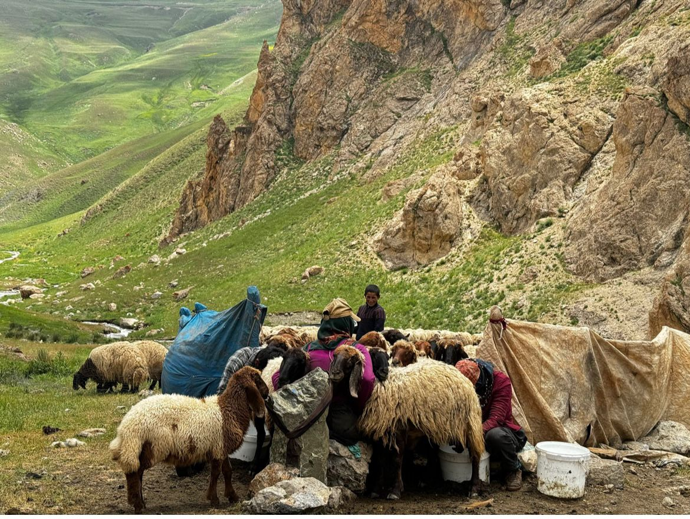
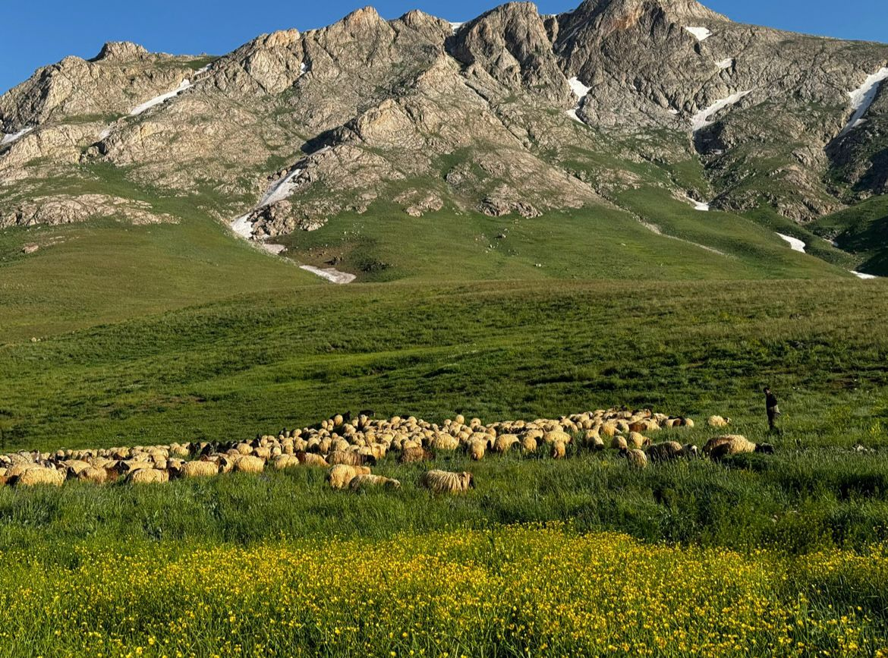
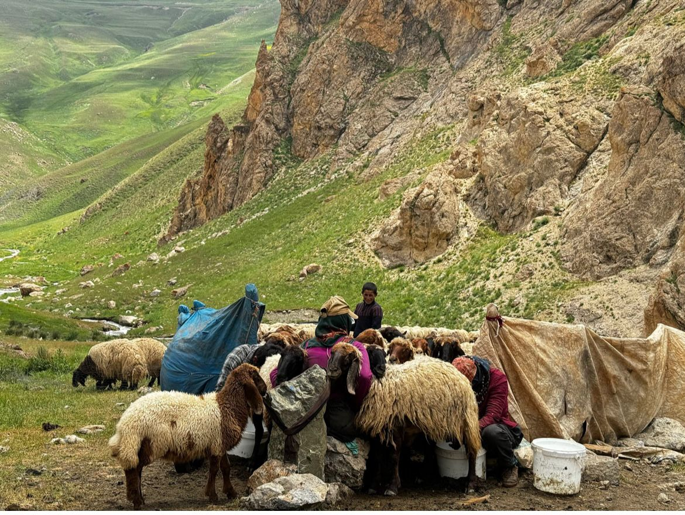
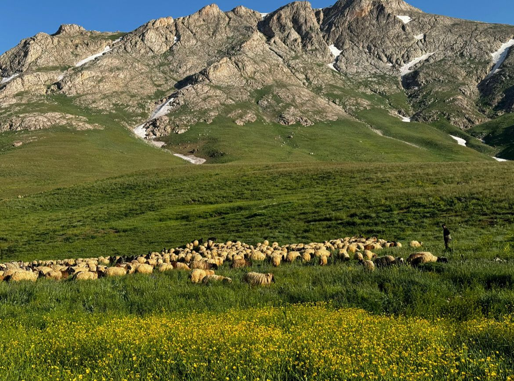
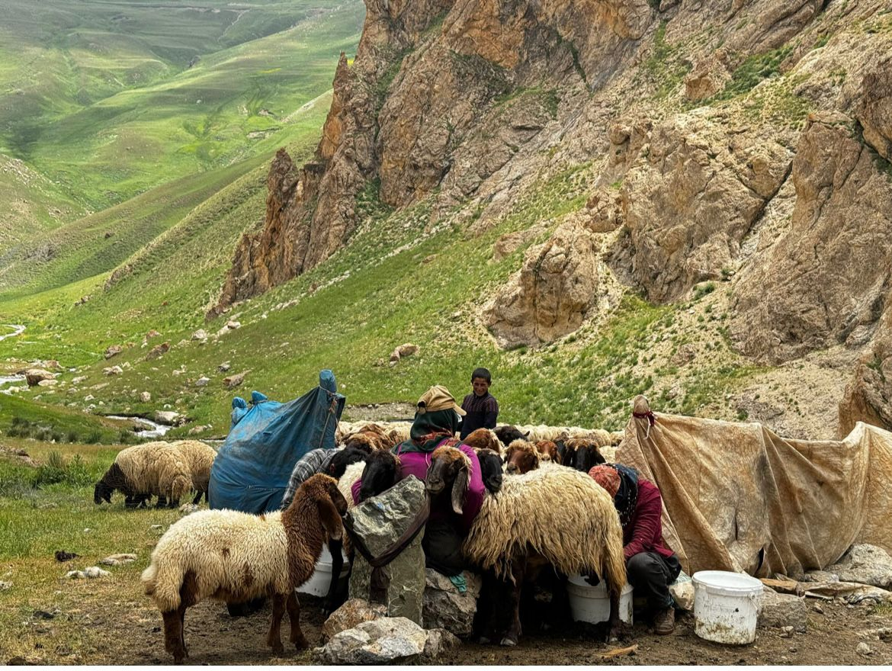
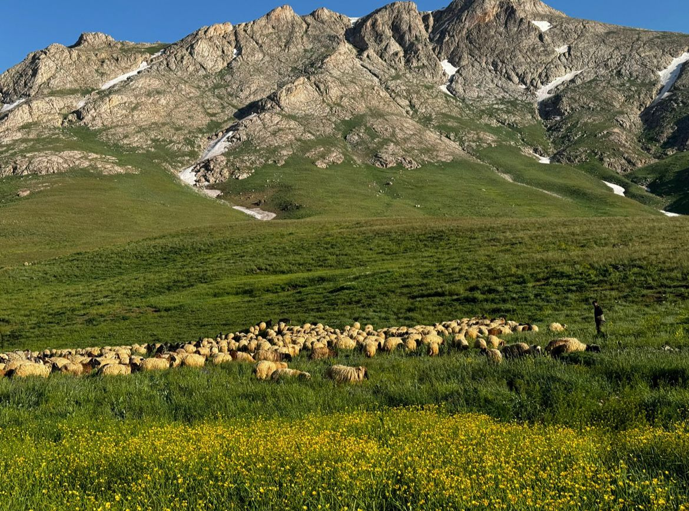

Batman İli Damızlık Koyun-Keçi Yetiştiricileri Birliği
"Buğday, tarımın bel kemiği olarak gıda güvenliğini sağlarken; koyun yetiştiriciliği, et ve yün üretimiyle ekonomik sürdürülebilirliği destekler."
 



"Buğday, tarımın bel kemiği olarak gıda güvenliğini sağlarken; koyun yetiştiriciliği, et ve yün üretimiyle ekonomik sürdürülebilirliği destekler."


"Üye memnuniyeti, bizim için en öncelikli konudur. Her zaman yüksek hizmet kalitesi sunarak, üyelerimizin beklentilerini en iyi şekilde karşılamayı hedefliyoruz."
"Üyelerimize en hızlı şekilde yardımcı olup gerekli takviyemizi yapmaktayız."
"Gerek Merkezde, gerek ilçelerimizde ve gerekse köy ve mezralarımızda, Elimizden geldiğince heryere hizmet vermekteyiz."

Aşı takvimi, koyun ve keçilerin sağlığını korumak, bulaşıcı hastalıklara karşı direnç kazanmalarını sağlamak ve sürü verimliliğini artırmak amacıyla belirlenen düzenli aşılama programıdır. Bu program, hayvanların yaşına, sağlık durumuna ve çevresel koşullara göre veteriner hekimler tarafından oluşturulur.
Aşı takviminin önemi büyüktür, çünkü düzenli aşılama yapılmadığında hayvanlar ölümcül hastalıklara yakalanabilir ve bu durum sürü kayıplarına, üretim verimliliğinin düşmesine ve ekonomik zararlara yol açabilir. Aşılamalar, sürüdeki hastalık yayılımını önleyerek sağlıklı ve verimli bir üretim süreci sağlar. Ayrıca, bruselloz gibi insanlara da bulaşabilen hastalıkların kontrol altına alınmasına yardımcı olur.
Bu nedenle, koyun ve keçi yetiştiricilerinin, veteriner hekimler tarafından belirlenen aşı takvimine uyması hayvan sağlığını korumak ve sürdürülebilir bir üretim süreci sağlamak açısından büyük önem taşır.
Ayrıca aşı takvimi 12 ay sürmektedir.
"Küçükbaş hayvancılığın yoğun olarak yapıldığı Batman ilimizde Halk Elinde Ülkesel Küçükbaş Hayvan Islahı Projesi kapsamında 5 alt proje ilimize kazandırılmış ve yaklaşık 13 yıldır devam etmektedir. Bu anlamda hastalıklara dayanıklı, zorlu yayla, mera şartlarında uzun mesafe yürüyebilen bir ırk olan Koçeri koyununun ekonomiye kazandırılması, geleneksel hayvancılıktan çıkıp yarı profesyonel anlamda hayvancılığa geçilmesi noktasında önemli mesafeler alınmış olup Kayıt tutulan sürülerden elde edilecek kaliteli damızlıklar sürü sahiplerine daha fazla verim ve dolayısıyla daha fazla kar sağlayacaktır."
Biz Kimiz?
Batman İli Damızlık Koyun-Keçi Yetiştiriciler Birliği Başkanı.